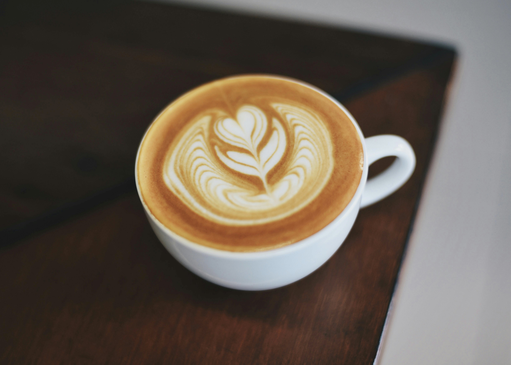
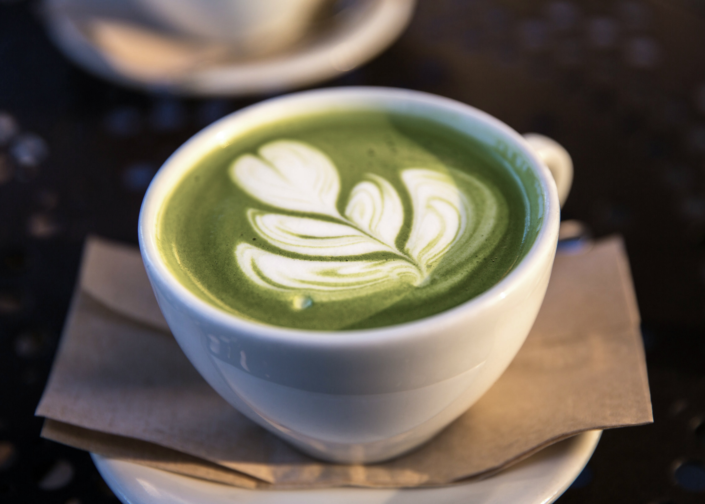
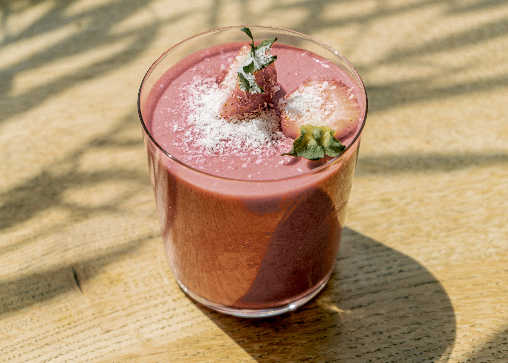

Cappuccino
A classic Italian coffee made with double espresso and steamed milk foam.

Matcha Latte
A Japanese green tea latte made with finely ground matcha powder and steamed milk.

Fruit Smoothies
Refreshing smoothies made with a blend of fresh fruits, yogurt, and honey.